附录 关于连分数的几个基本命题的证明
1.把正实数α展成连分数的一般方法。
我们用递推法定义a0，a1，a2，…，an，…首先令
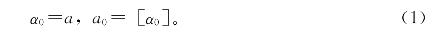
（这里[α0]表示α0的整数部分，即不超过α0的最大整数）
若已有了αk和ak＝[αk]，αk≠ak，则定义
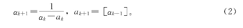
显然永远有αk＋1＞1（k＝0，1，2，…）。
如果αn＝an，那么过程终止，此时[a0，a1，a2，…，an]就是α的连分数。注意，这时，由0＜αn－1－an－1＜1，则an≥2。
如果恒有αk＞ak，那么得到无穷连分数
[a0，a1，a2，…，an，…]。
2.根据定义（2）式可得
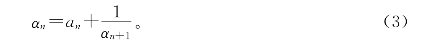
在（3）式中取n＝0，1，2，…可得
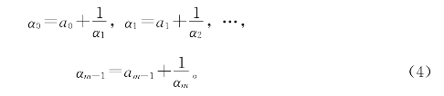
由（4）式可得
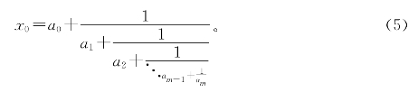
由（5）式可见，若某个αm为整数，则α0为有理数。
反过来，如果α0是有理数，
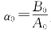
为最简分数，显然α1，α2，…，αn都是有理数。设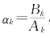
，由于k＝1，2，3，…时，有αk＞1，故Bk＞Ak。若αk不是整数，则有正整数Rk＜Ak，使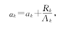
由（3）式得
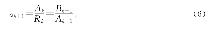
可见Ak＋1≤Rk＜Ak。这样到某一步会有Ak＝1，αk为整数，即a0可展成有限连分数。至此，第37页命题9得到了证明。
3.近似分数的递推公式及其推论。
设｜a0，a1，a2，…，an，…｜是有穷或无穷的连分数，则最简分数
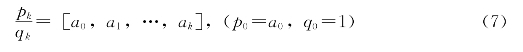
叫做[a0，a1，a2，…，an，…]的第k个近似分数。
对k≥2，有递推公式
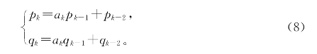
我们对k用数学归纳来证明（8）式。当k＝2，（8）式可以直接验证。设当k＜n时（8）式成立。考虑连分数[a1，a2，…，an]，并且用
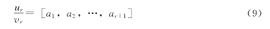
表示它的第r个近似分数。由于
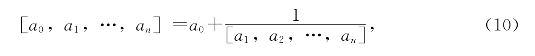
所以得（注意：由un－1与vn－1互质，可知pn与qn互质）
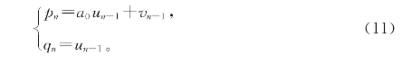
又按照归纳法的假设
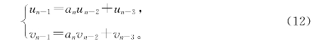
（注意这里是an不是an－1，因为[a1，a2，…，an]是从a1开始的。）再应用公式（11）可得
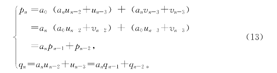
于是（8）式得证。
公式（8）是连分数的一个很重要的基本性质。如果约定p－1＝1，q－1＝0，则（8）式对k＝1也成立。从公式（8）可得
推论1
（ⅰ）pk≥pk－1，qk≥qk－1，且当k＞2时等式成立。
（ⅱ）pk≥2pk－2，qk≥2pk－2，故
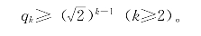
推论2 对一切k≥0有
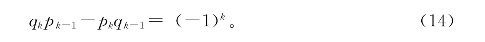
推论3 对一切k≥1有
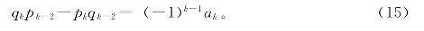
推论1（ⅰ）可由（8）式直接看出成立。现在来证明推论1（ⅱ）。
由推论1（ⅰ）知，当k≥2时，qk≥qk－1，又因为
qk＝akqk－1＋qk－2≥qk－1＋qk－2≥2qk－2，
所以
q2k≥2q2k－2≥2·2q2k－4≥…≥2kq0＝2k；
q2k＋1≥2q2k－1≥…≥2kq1≥2k。
因此
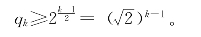
推论2的证明可这样完成：将（8）中两式分别乘以qk－1和pk－1，再由第二式减去第一式，得
qkpk－1－pkqk－1＝－（qk－1pk－2－pk－1qk－2）。
又因
q0p－1－p0q－1＝1，
故（14）式对一切k≥0成立。
推论3的证明方法与证明推论2的方法类似：将（8）式中两式分别乘以qk－2和pk－2，从第二式减去第一式，再用推论2即得（15）式。
由推论2得，对一切k≥1，有
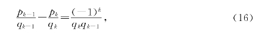
由推论3，得
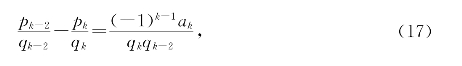
于是有
推论4 当k增大时，
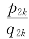
是递增序列，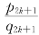
是递减序列，而且任一个奇数阶近似分数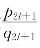
大于任一个偶数阶的近似分数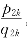
。推论4的前一论断由（17）式给出。另一方面，由（16）式可知
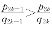
，再由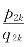
的递增性及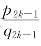
的递减性，可知它的后一论断成立。根据本书第八章介绍的数列极限的基本定理“递增（减）有界数列必有极限”，以及推论4，可知两个数列
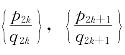
都有确定的极限。由（16）式及推论1之（ⅱ），可知qk→＋∞（k→＋∞），故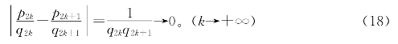
这说明两个数列趋于同一个极限β。β叫做此连分数的值。
但是，β的连分式是否就是[a0，a1，a2，…，an，…]呢？
4.正数α的连分数的值β＝α。
在1中，我们给出了把α＞0展成连分式的方法，并指出：若α是有理数，其连分式是有限的，且其值正是α；又知若α是无理数，其连分式必为无限的，设它是[a0，a1，a2，…，an，…]。
在3中我们又证明了这个连分式的渐近分式
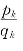
当k→＋∞时有确定的极限β。这个β是否正是原来的那个α？为了回答这个问题，需要一个
定理 若α可展开为连分数[a0，a1，a2，…，an，…]，则对任意k，α在
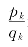
和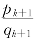
之间。反之，若对任意k，α在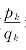
和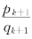
之间，则α可展开为连分数[a0，a1，a2，…，an，…]。这里，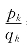
＝[a0，a1，a2，…，an]是第k个近似分数。证明 先证前一个论断。对k做数学归纳。若k＝0，显然有
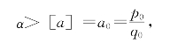
另一方面，有
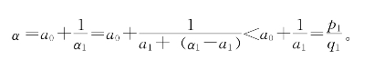
故论断对k＝0成立。若论断对k＜n成立，由于α1的连分数展式为[a1，a2，…，an，…]，故α1在[a1，a2，…，an]和[a1，a2，…，an＋1]之间，于是，α＝a0＋
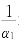
在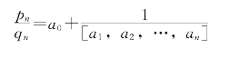
和
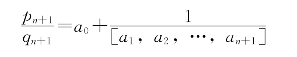
之间，由数学归纳法，前一论断得证。
现在来证后一论断。设对任意的k≥0，α在
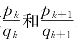
之间，经证α的第n个近似分数为[a0，a1，a2，…，an]。对n做数学归纳。n＝0，结论显然成立。设论断对n＜m成立，由于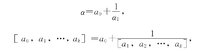
由α在[a0，a1，…，ak]和[a0，a1，…，ak＋1]之间，可知α1在[a1，a2，…，ak]和[a1，a2，…，ak＋1]之间。由归纳前提可知α1的第m－1个近似分数为[a1，a2，…，am]，故α的第m个近似分数为a0＋[a1，a2，…，am]－1＝[a0，a1，…，am]。由数学归纳法，后一论断也得证。定理证毕。
由此定理可知，任意无理数α＞0可展成这样的无限连分数[a0，a1，…，an]，其近似分数
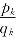
→α（k→＋∞）。反过来，任意无限连分数[a0，a1，…，an，…]，其近似分数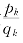
的极限β的连分数展式正是[a0，a1，…，an，…]。这就证明了第37页的命题10。最后，让我们来完成第37页的命题11的证明。
设α展成连分数后，第k个近似分数是
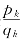
，由上面这个定理，α在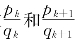
之间，故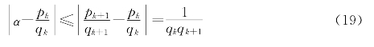
此即命题11中的（23）。
剩下的是证明：若分数
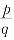
的分母q≤qk，则必有等式仅当或k＝1，α＝a0＋时成立。事实上，若
之间，则有
由q≤qk＜qk＋1推知｜pqk－qpk｜＝0，即
若在和之间，因α在 和之间，（20）式显然成立，等式仅当时成立。
最后，若之间，则当（20）不成立时，有
由于q≤qk，不可能有，故｜pqk＋1－qpk＋1｜≥1。于是，上列不等式只有在所有“≥”号都取等号时成立。于是
且又有
即
于是（pk＋p）＝。因为｜qkpk＋1－pkqk＋1｜＝1，所以qk＋1与pk＋1qk互质，于是qk＋1整除2，这只有qk＝1，qk＋1＝2。注意到α＝，所以α＝，pk＋1为奇数，k＝0。命题11证毕。